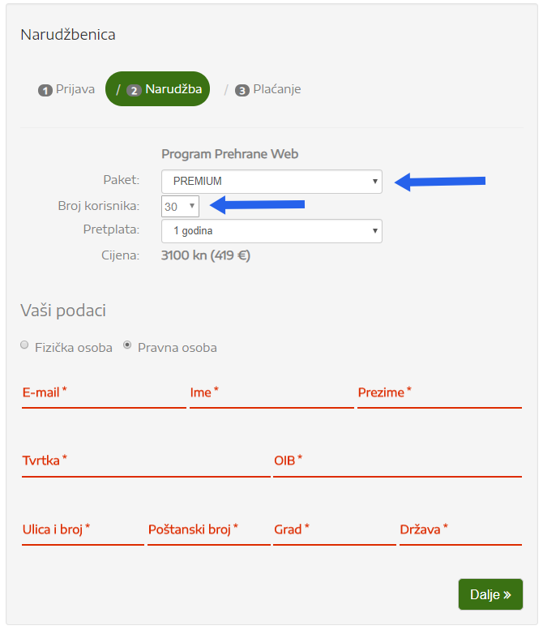
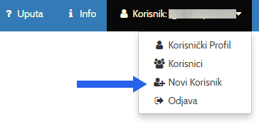
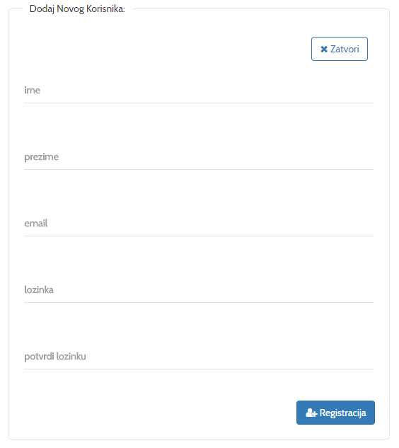
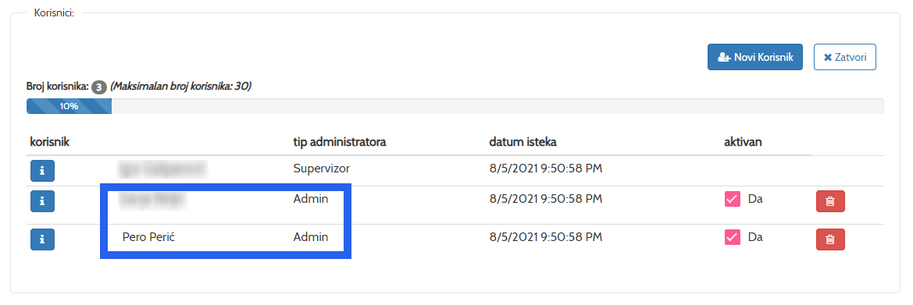

Program Prehrane Web
Primjena aplikacije u školama i fakultetima
Softver Program Prehrane se koristi već čitav niz godina u brojnim obrazovnim ustanovama u Hrvatskoj i zemljama regije.
Program Prehrane je osim za profesionalne potrebe nutricionista i zdravstvenih djelatnika pogodan i za edukativne svrhe u medicinskim, obrtničkim školama i fakultetima.
Korištenjem aplikacije na nastavi, studentima znatno olakšava i skraćuje vrijeme potrebno za izradu uravnoteženih jelovnika, analizu prehrambenih navika i antropometrijskih mjera, analizu sastava namirnica itd.
Neki od naših korisnika su: Prehrambeno tehnološka škola Zagreb, Srednja škola Duga Resa, Ženski đački Dom Split, Poljoprivredna, prehrambena i veterinarska škola Stanka Ožanica Zadar, Učenički dom Ivanić Grad, Srednja škola Braća Radić Kaštel Štafilic Nehaj, Univerzitet Modernih Znanosti-ckm Mostar, Medicinska škola Šibenik, Pučko otvoreno učilište Zagreb, Visoka škola strukovnih studija za obrazovanje vaspitača i trenera u Subotici itd.
- Izračun energetske potrošnje pojedinca
- Plan tjelesne aktivnosti
- Preporuke za razne dijete
- Izrada dnevnih i tjednih jelovnika
- Analiza jelovnika
- Izrada recepata
- Unos vlastitih namirnica
- Praćenje antropometrijskih parametara
- Izrada cjenika itd.
Unutar Premium paketa moguće je registrirati proizvoljni broj korisnika tako da svi učenici na nastavi mogu istovremeno koristiti aplikaciju.
Postupak registracije i narudžbe:
- Ako se već niste registrirali, popunite obrazac za registraciju www.programprehrane.com.
- U narudžbenici upišite e-mail i lozinku koju ste odabrali prilikom registracije i kliknite na tipku Dalje >>.
-
Odaberite PREMIUM paket i trajanje pretplate (jedna ili dvije godine) i odaberite broj korisnika (studenata),
odaberite pravna osoba, popunite sva polja i kliknite na tipku Dalje >>.
 - Nakon što pošaljete narudžbu, na Vaš ćete e-mail dobiti podatke za uplatu.
- Aplikacija postaje aktivna nakon primitka Vaše uplate ili nakon što nam pošaljete potvrdu o uplati.
Postupak registracije studenata:
- Prijavite se u aplikaciju.
-
U kontrolnoj ploči (dashboard) kliknite na DODAJ NOVOG KLIJENTA.
 ili glavnom izborniku u gornjem desnom uglu kliknite na Novi korisnik.

-
Upišite ime i prezime studenta, njegov e-mail, odaberite lozinku i kliknite na Registracija.
 -
Možete registrirati onoliko korisnika koliko ste odabrali prilikom narudžbe.

Ako dosegnete maksimalan broj korisnika onda jednostavno možete nadoplatiti za nove korisnike po cijeni od 50/kn po korisniku godišnje, ali možete i izbrisati postojeće korisnike ako oni više ne koriste aplikaciju, npr. na kraju semestra i umjesto njih dodati nove.
Napomena: Važno je da za studente Tip administratora ostane Admin, jer su im na taj način ograničena administratorska prava (npr. dodavanje i brisanje korisnika što može samo Supervizor).
Više o aplikaciji pogledajte ovdje.